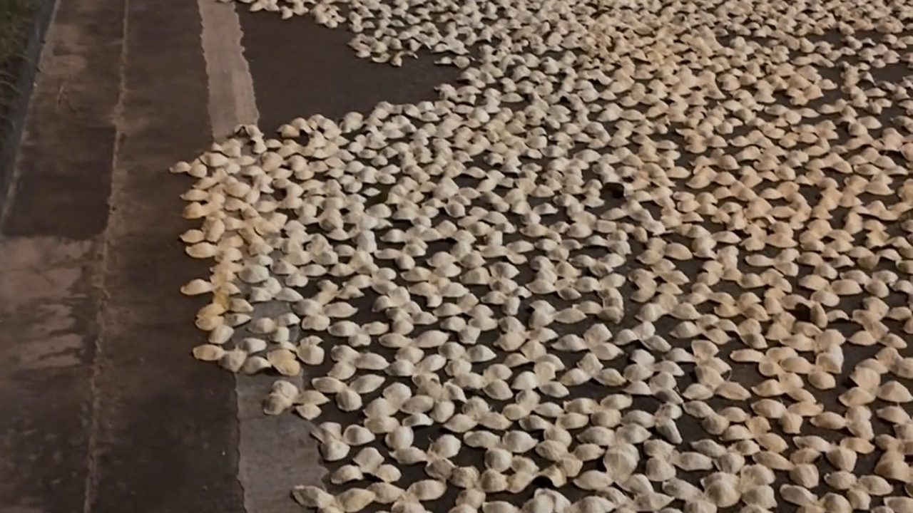
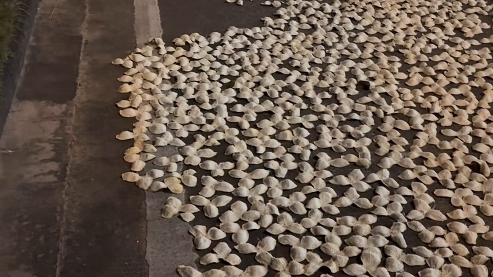
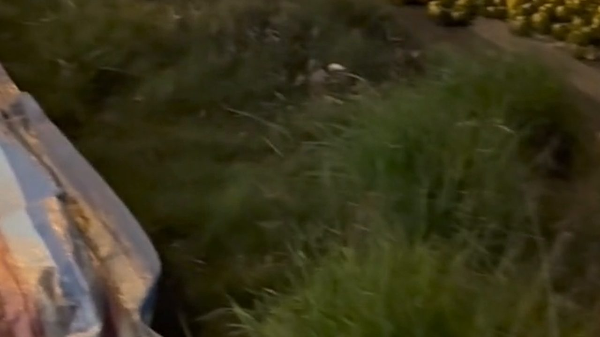
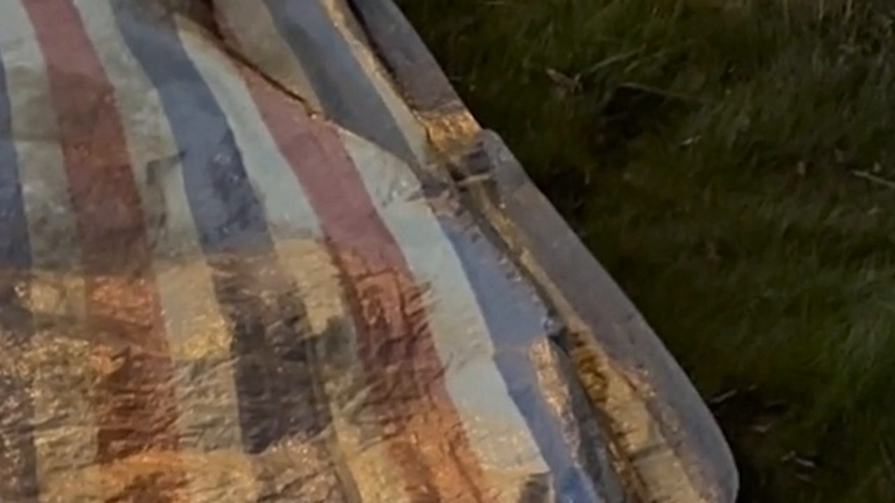
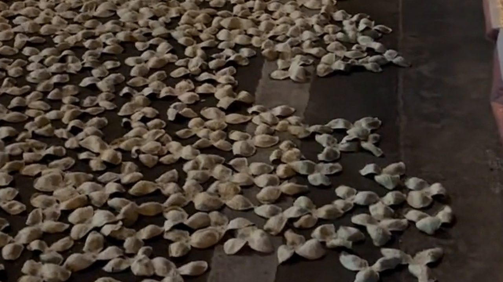

10月5日深夜，新會的路上還攤着一大片柑皮。路燈底下，幾位工人蹲在皮堆旁，一片一片地翻。
很多人第一次看到這個場面會問：「為什麼要連夜翻？」答案很簡單——皮一沾地氣、吸了濕氣，就容易變壞。這也正是新會陳皮最耗人的一道工序。
2021 年，「中藥炮製技藝（新會陳皮炮製技藝）」列入第五批國家級非物質文化遺產代表性項目名錄（編號 Ⅸ-3，申報地區為廣東省江門市新會區）。名錄上把流程寫得很清楚：採摘、開皮、反皮、翻皮、曬制、陳化。
一、夜裡的翻皮：不翻，明天就黏在一起

我蹲下來問正在翻皮的一位大姐。
「咁夜仲翻？」
「唔翻唔得。今日冇翻到嘅，聽日就黏埋一齊。」
「一晚要翻幾次？」
「睇天氣。乾爽就少啲，翻完仲要睇住有冇雨。」
翻皮看起來只是「把皮翻過來」，但它決定一批皮能不能成：翻得不均勻，一面乾一面濕，入倉之後就會發霉。這也是新會人所說的「睇天食飯」——不是客氣話，是真的要守着天。
二、非遺工序：從樹上到倉裡，一共六步

依中國非物質文化遺產網的記載，這套技藝形成了一句口訣：「三年育苗、三年掛果、三批採收、三個品種、三瓣開皮、三年曬皮、三級分皮、三年陳化、長久貯存」。其中幾個細節，值得每個買皮的人記住：
採摘——在果實成長的三個時期分別採收，講究「一果兩剪」。
開皮——須正三瓣均勻剝開，保持果蒂相連。
反皮——陰乾六小時左右，等皮身變軟後快速進行。
翻皮——就是我們在路邊看到的那一幕。
曬制——要求光照適度，不是越猛越好。
陳化——嚴格控制溫度與濕度；不同年份的陳皮，貯存工具、翻曬時間與次數都不一樣。
三、為什麼新會的柑皮特別厚？

非遺名錄裡還提到一個地理原因：新會兼具沉積土與洪積土的水土結構，加上濕盆地氣候地貌，使新會柑果皮較厚，炮製過程中果皮會發生「濕陳化」，所得陳皮品質尤為突出。
換句話說，同一套手藝搬到別的地方，也做不出同樣的皮。這正是地理標誌的意義——不是名字好聽，是水土決定的。
還有一組數字能說明這門手藝的規模：如今新會全區有 1000 多家經營主體傳承這項技藝，新會柑農 5000 戶，相關產業鏈從業人員 5 萬餘人。
四、路邊攤曬：傳統做法，但現在是違法

回到那個畫面：路邊攤曬。這是新會延續了數百年的做法，原因很實際——過去村裡沒有那麼大的曬場，公路邊通風、向陽、地面平整，是最現成的「曬場」。
但它有兩個問題：一是落塵與車輛尾氣；二是占道本身就是違法行為。江門本地媒體與澎湃新聞都曾報道過相關整治，標題寫得很直白：「占道曬陳皮 既不文明也違法」、「陳皮千萬不能這樣曬，違法！」
「咁我買嘅皮，係路邊曬定曬場曬？」
「你問得出呢句，已經贏一半。正規做法係有圍欄、離地、通風嘅曬場或者棚架；路邊攤曬嘅皮，落塵同尾氣係避唔到嘅。」
所以買皮的時候，除了問產區與年份，也可以多問一句：在哪裡曬的。敢答、答得具體的賣家，通常靠得住。
五、一斤皮，背後是多少鮮果與多少次翻曬

一批皮從開皮到入倉，短的曬十幾天，長的要反覆曬上幾個月，中間遇到陰雨還要收進收出。這就是「三年曬皮」的意思——它說的不是連續曬三年，而是這批皮的曬制與陳化要跨過三個年頭。
數字上更直觀：100 斤鮮果只出 4～5 斤乾皮。也就是說，你手上一斤皮，背後是二十斤鮮果、幾十次翻曬，以及至少三年的等待。
下次看到路邊那一片皮，也許可以多想一秒：那不是一堆果皮，是幾萬人正在守着的一門手藝。
常見問題
新會陳皮為什麼要翻皮？讓兩面均勻乾燥。不翻，接觸地面那一面容易積濕，皮會黏在一起，入倉後發霉。翻皮次數要看天氣，乾爽天少翻，陰雨天要加密。
「三年曬皮」是什麼意思？不是連續曬三年，而是這批皮的曬制與陳化要跨過三個年頭——包括反覆翻曬、分級、入倉陳化。這是非遺口訣裡的一環。
開皮為什麼一定要三瓣？非遺工序要求「正三瓣均勻剝開，保持果蒂相連」。三瓣均勻，皮身受力一致，反皮與曬制時不易斷裂，也方便後續分級與貯存。
路邊曬的陳皮和曬場曬的有什麼分別？路邊通風向陽但落塵與車輛尾氣無法避免，而且占道曬皮本身違法，多地已開展整治。正規做法是有圍欄、離地、通風的曬場或棚架。
為什麼新會的陳皮特別厚？新會兼具沉積土與洪積土的水土結構，加上濕盆地氣候地貌，使新會柑果皮較厚，炮製過程中會發生「濕陳化」，這是地理條件決定的。
一斤陳皮要多少鮮果？約二十斤。100 斤鮮果只出 4～5 斤乾皮，再加上人工、翻曬與三年陳化的倉儲成本，所以價格壓不到極低。
結語
這一晚在路邊看到的，其實是新會陳皮最真實的一面：沒有濾鏡，只有路燈、皮堆和彎着腰的人。非遺名錄上的六個步驟，落到地上就是這樣一夜一夜守出來的。
註：工序與產地敘述引自中國非物質文化遺產網「中藥炮製技藝（新會陳皮炮製技藝）」項目資料；占道曬皮相關規定引自江門廣播電視台及澎湃新聞公開報道。
想了解三種採收時機的分別，看這篇《青皮不是「年輕的陳皮」》；想弄清「圈枝」的真相，翻翻這篇《公路邊攤開一大片：新會陳皮的「圈枝」真相》。想看真正的曬場怎麼運作，來新會陳皮村南門牌坊G04找滢滢姐，天氣好的時候可以帶你去看生曬。
下期預告：等二紅皮上市，滢滢姐會在曬場上把青皮、二紅皮、大紅皮三種皮同時開湯，只憑鼻子和舌頭分出分別。